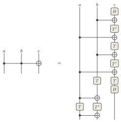

Examples / 26
Toffoli gate

The Toffoli gate – a NOT on the third qubit controlled by the first two, the gate the modular arithmetic of Shor's algorithm is built from – and its decomposition into gates of one qubit and controlled NOTs: H, T and its adjoint, and six CNOTs, in thirteen steps.
Time runs down: a qubit is a site and a step of the circuit a layer, so a gate on one qubit is a tensor in a slot, and a controlled NOT a dot and a circled plus in one layer, joined along it. Where a CNOT acts on the first and the third qubit, the second qubit's wire crosses its line (+). The layers of gates on one qubit are apart, with nothing along them.
Thirteen steps would be half a page tall at the notation's distances; the circuit is drawn compact instead – both stacks at 0.7 of the notation's distances and sizes, the decomposition's layers closer still – by factors, not lengths.
The picture
Point at a line to see what it draws, or at the picture to see which line drew it.
\begin{tikzpicture} \tnstack[scale=0.7]{G}{3}{x} \tnlayer{G}{x}{2*ctrl/, targ/} \tnconnect{G} \tnopen[labels={$a$, $b$, $c$}]{up}{G} \tnopen{down}{G} \tneq \tnstack[scale=0.7, rise=0.6]{D}{3}{h1, x1, t1, x2, t2, x3, t3, x4, t4, h2, x5, t5, x6} \tnlayer{D}{h1}{2*|, gate/$H$} \tnlayer{D}{x1}{|, ctrl/, targ/} \tnlayer{D}{t1}{2*|, gate/$T^\dagger$} \tnlayer{D}{x2}{ctrl/, +, targ/} \tnlayer{D}{t2}{2*|, gate/$T$} \tnlayer{D}{x3}{|, ctrl/, targ/} \tnlayer{D}{t3}{2*|, gate/$T^\dagger$} \tnlayer{D}{x4}{ctrl/, +, targ/} \tnlayer{D}{t4}{|, 2*gate/$T$} \tnlayer{D}{h2}{2*|, gate/$H$} \tnlayer{D}{x5}{ctrl/, targ/, |} \tnlayer{D}{t5}{gate/$T$, gate/$T^\dagger$, |} \tnlayer{D}{x6}{ctrl/, targ/, |} \tnconnect[apart={h1, t1, t2, t3, t4, h2, t5}]{D} \tnopen[labels={$a$, $b$, $c$}]{up}{D} \tnopen{down}{D}\end{tikzpicture}
The whole file
\documentclass[border=4pt]{standalone}\usepackage{amsmath,amssymb}\usepackage{tikz-tensors}\input{notation}\begin{document}\begin{tikzpicture} \tnstack[scale=0.7]{G}{3}{x} \tnlayer{G}{x}{2*ctrl/, targ/} \tnconnect{G} \tnopen[labels={$a$, $b$, $c$}]{up}{G} \tnopen{down}{G} \tneq \tnstack[scale=0.7, rise=0.6]{D}{3}{h1, x1, t1, x2, t2, x3, t3, x4, t4, h2, x5, t5, x6} \tnlayer{D}{h1}{2*|, gate/$H$} \tnlayer{D}{x1}{|, ctrl/, targ/} \tnlayer{D}{t1}{2*|, gate/$T^\dagger$} \tnlayer{D}{x2}{ctrl/, +, targ/} \tnlayer{D}{t2}{2*|, gate/$T$} \tnlayer{D}{x3}{|, ctrl/, targ/} \tnlayer{D}{t3}{2*|, gate/$T^\dagger$} \tnlayer{D}{x4}{ctrl/, +, targ/} \tnlayer{D}{t4}{|, 2*gate/$T$} \tnlayer{D}{h2}{2*|, gate/$H$} \tnlayer{D}{x5}{ctrl/, targ/, |} \tnlayer{D}{t5}{gate/$T$, gate/$T^\dagger$, |} \tnlayer{D}{x6}{ctrl/, targ/, |} \tnconnect[apart={h1, t1, t2, t3, t4, h2, t5}]{D} \tnopen[labels={$a$, $b$, $c$}]{up}{D} \tnopen{down}{D}\end{tikzpicture}\end{document}